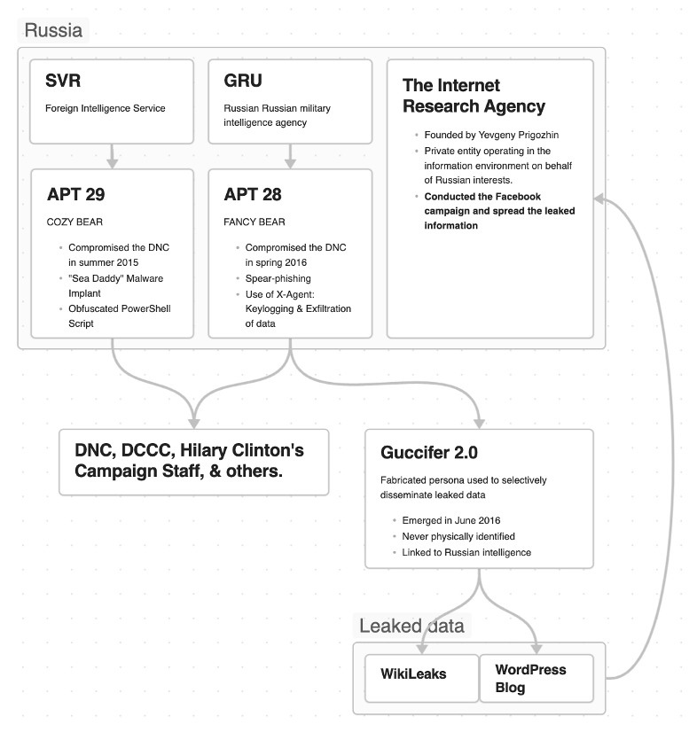

Analysis
Between 2015 and 2016, the Russian Foreign Intelligence Service (SVR) and Military Intelligence Agency (GRU) breached the Democratic National Committee (DNC) and subsequently conducted a disinformation campaign directly before the U.S. presidential election. The DNC publicly announced the breach on June 14, 2016. Only one day later, alias Guccifer 2.0 leaked the first batch of data through a WordPress blog. The second batch of breached data was released 37 days later through WikiLeaks, just 3 days before the Democratic National Convention. This operation had a significant impact on the information landscape surrounding the election and undermined the Democratic Party and its candidate Hilary Clinton running against Republican candidate Donald Trump.
All roads lead to Russia.
The operation targeted not just the DNC and Democratic Congressional Campaign Committee (DCCC), but also related organizations and individuals from Clinton's campaign staff, demonstrating a comprehensive approach and targeting. As result, approximately 300 gigabytes of data from cloud-based accounts, 2000 confidential files, and nearly 20,000 emails were publicly leaked and published. In comparison, despite the attempts, no evidence was found that the Republican National Committee or the Trump campaign would be successfully hacked or targeted to the same extent as the DNC during the same timeframe. (Abrams 2019)
After the DNC acknowledged the hack, Guccifer 2.0 claimed responsibility (Nakashima 2016). In an interview with Guccifer 2.0 on June 21, 2016, he declared his Romanian nationality, the same nationality of the Marcel Lazar Lehel, hacker who originally used the "Guccifer" pseudonym (Franceschi-Bicchierai 2016). This original Guccifer was arrested in Romania already in January 2014 and extradited to the U.S. in March 2016, therefore, he wouldn’t have been able to conduct the hack due to imprisonment. In addition, the DNC operation showed high-level tactics, techniques, and procedures (TTPs) that the original Guccifer was apparently not capable of. True actors behind the operation used this fabricated persona as homage to the original Guccifer, and most importantly to disseminate the stolen information. Using this persona as front-end offered the real actors a degree of deniability. Therefore, it is important to differentiate between Guccifer and Guccifer 2.0.
Nevertheless, this fictitious persona did not shield the real actors from attribution. After multiple independent investigations, private and public sector experts attributed the operation, with a high level of confidence, to Russian actors. This attribution was supplemented by Special Counsel Robert S. Mueller, Office of the Director of National Intelligence, and the U.S. Senate Select Committee on Intelligence that rejected Guccifer 2.0 claims. Furthermore, they were able to attribute the operation to Fancy Bear (APT28), connected to the GRU, and Cozy Bear (APT29) connected to the SVR (MITRE 2017a, b). The high degree of confidence for this attribution was possible thanks to, but not only, multiple findings:
- In an interview, Guccifer 2.0 pretended he didn't know Russian but didn't seem to know Romanian either. When forced to answer questions in Romanian, he used poor grammar and terminology that led experts to believe he was using an online translator (Franceschi-Bicchierai 2016).
- IP addresses extracted from messages sent by Guccifer 2.0 to journalists showed a link to the Russian cyber underground, even though many of the conversations were routed through a French VPN firm. Furthermore, Guccifer 2.0, on at least one occasion, failed to use a VPN, and, as a result, he left a real Moscow-based IP address in the logs of an American social media company (ThreatConnect 2016).
- The operation demonstrated thorough strategic timing. Leaked information was cherry picked and released largely in the final weeks of the election campaign. Demonstrating, at least to some extent, intent to cause damage to DNC image.

The primary intent behind the leak appears to be influencing public opinion and the outcome of the 2016 US presidential election. Russian Internet Research Agency played a significant role in this through disseminating the leaks on social media, adding more fuel to already heated public discord (Bump 2018). However, the operation also served to gather intelligence and sow distrust in the American political system. (Biddle 2016)
While it is difficult to doubt Russian actors’ involvement in this operation, the Russian Ministry of Foreign Affairs, as expected, denied any participation of Russian government. No other official or unofficial claims of responsibility aside from Guccifer 2.0, which are unsubstantial, could be found. In April 2017, CIA Director Mike Pompeo tried to establish link between GRU and the Wikileaks, which was used to publish the breached documents from the DNC (Watson 2017). Julliange Assange, founder of Wikileaks, denied any political affiliation to Russia and did not reveal the source of the leak (Ye Hee Lee 2017). In addition, in August 2020, the spokeswoman of the Russian Foreign Ministry - Maria Zakharova denied all allegations made in the Senate Select Committee on Intelligence Report regarding the alleged interference in the election (Zakharova 2022). Zakharova claimed that the investigation simply repeated factless insinuations and that the narrative of Russian interference was invented only as part of political fight in the US. This leads to a question whether Fancy Bear and Cozy Bear were directed to do the operation or acted on their own (The New York Times 2016). Either way, Russia would seem to benefit from Trump as winning candidate compared to Clinton that was generally harsher in her rhetoric and stance towards Russia. (Kiley 2017)
Conclusion
In conclusion, the GRU's operation ultimately highlighted significant vulnerabilities in our democratic practice that is increasingly relying on technology. GRU demonstrated how sophisticated hacking and strategic information leaks can influence public opinion. Despite compelling evidence, the complexities of attributing state-sponsored cyber activities remain a challenge for intelligence officers. Ultimately, the operation serves as a reminder of the ongoing risks posed by cyber operations to electoral integrity, and it underscores the need for enhanced cybersecurity measures within political organizations, especially before election.